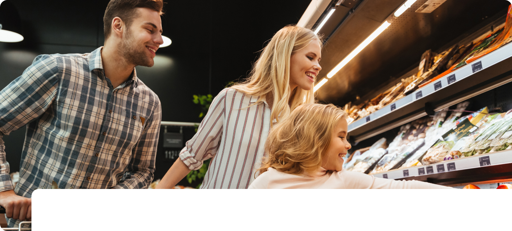

- 첨단 냉동 기술로 신선한 맛과 품질을 보존 합니다
- 한국마이콤 냉동기 엔지니어링의 식품, 음료 사업부는 최적의 온도 관리 솔루션을 제공합니다. 원자재 입고부터 완제품 출하까지 전 공정에 정밀한 온도 제어 기술을 적용하여 식품의 품질과 안전을 보장합니다. 히트 펌프, 에어 커튼 등 첨단 열 엔지니어링 기술을 통해 에너지 효율성을 높이고, 고객사의 생산성을 향상시킵니다. 다양한 식품 가공 공정에 맞는 맞춤형 냉동 솔루션으로 식품 산업의 혁신을 선도합니다.